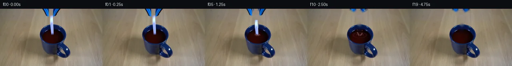

![首帧]()

Round 00
2026-11-05T00:22:09.949242+00:00像素候选变化代码 +221/−0inspection 更新
pixels 8379fcf0a5cda3b9 · code 58d5ec2d472820ba
查看本轮 generate.py 真实 diff
--- previous/generate.py +++ current/generate.py @@ -0,0 +1,221 @@ +#!/usr/bin/env python3 +"""Generate the 20-frame PixelWorld continuation using local pixel operations only.""" + +from pathlib import Path + +import cv2 +import numpy as np +from PIL import Image, ImageDraw, ImageFont + +import artifact_io + + +ROOT = Path(__file__).resolve().parent +H, W = 144, 256 + + +def polygon_mask(points, blur=0.0): + mask = np.zeros((H, W), np.float32) + cv2.fillPoly(mask, [np.asarray(points, np.int32)], 1.0) + if blur: + mask = cv2.GaussianBlur(mask, (0, 0), blur) + return np.clip(mask, 0.0, 1.0) + + +def shifted_layer(rgb, alpha, dx=0.0, dy=0.0, angle=0.0, center=(130, 40)): + matrix = cv2.getRotationMatrix2D(center, angle, 1.0) + matrix[:, 2] += (dx, dy) + moved_rgb = cv2.warpAffine( + rgb, matrix, (W, H), flags=cv2.INTER_LINEAR, + borderMode=cv2.BORDER_CONSTANT, borderValue=(0, 0, 0) + ) + moved_alpha = cv2.warpAffine( + alpha, matrix, (W, H), flags=cv2.INTER_LINEAR, + borderMode=cv2.BORDER_CONSTANT, borderValue=0 + ) + return moved_rgb.astype(np.float32), np.clip(moved_alpha, 0.0, 1.0) + + +def composite(dst, src, alpha): + a = alpha[..., None].astype(np.float32) + return np.clip(dst.astype(np.float32) * (1.0 - a) + src.astype(np.float32) * a, 0, 255) + + +def inpaint_uncovered(source, removal_mask): + """Reflect-pad so OpenCV can reconstruct masks that touch the top edge.""" + pad = 24 + padded = cv2.copyMakeBorder(source, pad, pad, pad, pad, cv2.BORDER_REFLECT_101) + pmask = cv2.copyMakeBorder( + (removal_mask * 255).astype(np.uint8), pad, pad, pad, pad, + cv2.BORDER_CONSTANT, value=0 + ) + clean = cv2.inpaint(padded, pmask, 5, cv2.INPAINT_TELEA) + return clean[pad:pad + H, pad:pad + W] + + +def liquid_region(source): + yy, xx = np.mgrid[:H, :W] + lum = source.astype(np.float32).mean(axis=2) + ellipse = ((xx - 132.0) / 35.5) ** 2 + ((yy - 68.0) / 23.0) ** 2 < 1.0 + dark = lum < 79 + region = (ellipse & dark & (yy >= 45) & (yy <= 89)).astype(np.uint8) + region = cv2.morphologyEx(region, cv2.MORPH_CLOSE, np.ones((5, 5), np.uint8)) + region = cv2.GaussianBlur(region.astype(np.float32), (0, 0), 0.7) + return np.clip(region, 0.0, 1.0) + + +def add_ripples(frame, liquid_alpha, frame_index): + if frame_index < 4 or frame_index > 18: + return frame + yy, xx = np.mgrid[:H, :W] + age = frame_index - 4 + # Two damped, perspective-compressed elliptical waves. + radius = 0.12 + 0.070 * age + q = np.sqrt(((xx - 131.0) / 31.0) ** 2 + ((yy - 66.0) / 11.5) ** 2) + decay = np.exp(-age / 8.5) + ring = np.exp(-((q - radius) / 0.052) ** 2) * decay + trailing = np.exp(-((q - max(0.04, radius - 0.19)) / 0.070) ** 2) * decay * 0.52 + # Restrict all perturbations to the numerically measured dark basin. + strength = (ring - 0.52 * trailing) * liquid_alpha + out = frame.astype(np.float32).copy() + warm_highlight = np.array([34.0, 20.0, 20.0], np.float32) + out += strength[..., None] * warm_highlight + # A short-lived central depression makes entry read as an impact rather than a glow. + dimple = np.exp(-(((xx - 131.0) / 7.5) ** 2 + ((yy - 66.0) / 3.0) ** 2)) + dimple *= max(0.0, 1.0 - age / 7.0) * liquid_alpha + out -= dimple[..., None] * np.array([12.0, 7.0, 5.0], np.float32) + return np.clip(out, 0, 255) … diff truncated; 134 more lines …